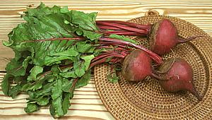

Red Beets

[Beta vulgaris]
A cultivated variety developed for edible roots, red beets are
particularly appreciated in the Slavic countries but also throughout
Europe and North America. The color comes from a purple pigment,
betacyanin, and a yellow pigment, betaxanthin, which are acid stable so
beets can be pickled. Beets are high in boron, a mineral important to
production of human sex hormones, and have had an aphrodisiac reputation
since Roman times. Beets are very sweet with a sugar content that can
reach 10%. The photo specimens were typically 3-1/2 inch in diameter,
weighed 11 ounces each, and provided an additional 7 ounces of edible
greens and stems.
More on Amaranth Family
Buying:
If you intend to use the greens or use the beets raw
select small ones which will be more tender. If the beets will be well
cooked you could use larger ones but much above a pound you risk them
becoming stringy.
When buying beets without leaves, make sure they have some stem stubble
at the top end, and preferably with root still on. Beets trimmed without
any stem stubble have probably been in storage way too long and have lost
flavor. They will also bleed out their color during cooking.
Storing:
Cut the greens down to about 1 inch and keep in
a refrigerator crisper, unwashed and unwrapped or wrapped loosely in
paper. They'll last several weeks.
Greens:
Beet greens are edible, particularly when young. Tender
ones can be used raw in salads, larger ones stir fried or sautéd in
oil or with bacon. They are similar to spinach but can stand much longer
cooking without becoming mushy.
Cooking:
In most cases beets are cooked separately from what
they will eventually be used with. Some swear oven roasting is the only
way to go, but I find little difference from boiling, and in sunny
Southern California we don't fire up a hot oven if we don't really need
to. The skins are easier to rub off if the beets are boiled.
Boiling:
Leave at least an inch when you cut off the
greens, do not scrub and do not cut off the root. Boil until cooked
through - a thin metal skewer will pass through the biggest one without
hitting a hard spot in the center when they are done. Drain, cool in
cold water until you can handle them and and rub off the skins. If you
want the beets to stay warm, take them hot and rub off the skins under
cold running water so you can handle them.- Roasting-1: Wrap the beets tightly in foil and bake
them in a preheated oven at 375°F/190°C, 1-1/4 hours for 3/4
pound beets. When they are done, cool them enough to handle them and
and rub off the skin.
- Roasting-2: Cover a rimmed baking sheet with foil. Coat
the beets with olive oil and place on the foil. Fold the foil up over the
beets and seal at the top. bake them in a preheated oven at
375°F/190°C, 1-1/4 hours for 3/4 pound beets.
cb_beetrz 070318 - www.clovegarden.com
©Andrew Grygus - agryg@clovegarden.com - Photos on this
page not otherwise credited are © cg1 -
Linking to and non-commercial use of this page permitted